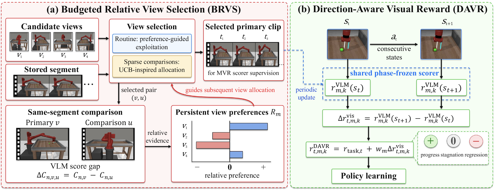

01
H1Stair
controlled ascent
MVROurs
CAMERA
ANONYMOUS SUPPLEMENTARY MATERIAL · ICLR 2027
QUALITATIVE VISUAL COMPARISONS
Synchronized DRAVS and Multi-view Video Reward Shaping (MVR)[1] rollouts on H1 and MetaWorld tasks, shown from complementary camera views.
METHOD OVERVIEW
Two ideas connect the method to the visual evidence below: budgeted view comparisons guide the scorer, while consecutive-state differences expose progress and regression.

ROLLOUT COMPARISONS
Each video places MVR and Ours side by side on the same task and synchronized timeline. Use the controls below the video to switch camera views.
01 / H1 BENCHMARK
HumanoidBench tasks spanning locomotion, posture, and balance.
controlled ascent
contact-rich landing
support-aware motion
upright retention
02 / METAWORLD · HARD-5 VISUALS
Hard-5 tasks where progress, contact, and late-stage stability are visible in the rollout.
tool alignment
goal-directed contact
forceful alignment
fine placement